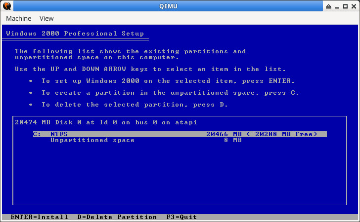

參考資訊：
https://github.com/Coekjan/winxp-in-qemu
步驟如下：
$ cd $ wget https://github.com/steward-fu/website/releases/download/wdm/win2k_nano.iso $ qemu-img create -f qcow2 win2k.qcow2 20G $ qemu-system-x86_64 -smp 1 -m 1G -drive file=win2k.qcow2,index=0,media=disk,format=qcow2 -drive file=win2k_nano.iso,media=cdrom,index=1 -boot d
